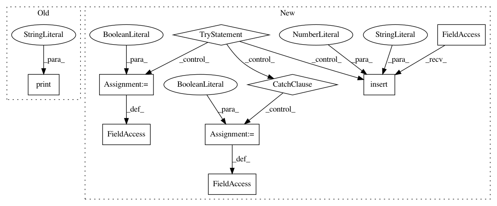

7d597de1db56929d5d3272bea94e6066a83a95c3,Software/Python/easysensors.py,,,#,1732
Before Change
if __name__ == "__main__":
print("No default test")
After Change
print(in_str)
try:
from line_follower import line_sensor
from line_follower import scratch_line
// is_line_follower_accessible not really used, just in case
is_line_follower_accessible = True
except:
try:
sys.path.insert(0, "/home/pi/GoPiGo/Software/Python/line_follower")
import line_sensor
import scratch_line
is_line_follower_accessible = True
except:
is_line_follower_accessible = False
//////////////////////////////////////////////////////////////////////////////////////////////////////////////////////////
// SENSORS
//////////////////////////////////////////////////////////////////////////////////////////////////////////////////////////
class Sensor(object):
Base class for all sensors. Can only be instantiated through the use of an :py:class:`~easygopigo3.EasyGoPiGo3` object.
In pattern: SUPERPATTERN
Frequency: 3
Non-data size: 9
Instances
Project Name: DexterInd/GoPiGo3
Commit Name: 7d597de1db56929d5d3272bea94e6066a83a95c3
Time: 2018-03-02
Author: cleoqc1124@gmail.com
File Name: Software/Python/easysensors.py
Class Name:
Method Name:
Project Name: DexterInd/GoPiGo3
Commit Name: a92be50ea7a1738558e2aee29b1aa394ba8dce82
Time: 2019-03-25
Author: cleoqc1124@gmail.com
File Name: Software/Scratch/GoPiGo3Scratch.py
Class Name:
Method Name:
Project Name: DexterInd/GoPiGo3
Commit Name: 14c55ee202a50c1991bc3253469c48d88d2cdb85
Time: 2019-03-20
Author: cleoqc1124@gmail.com
File Name: Software/Scratch/GoPiGo3Scratch.py
Class Name:
Method Name: